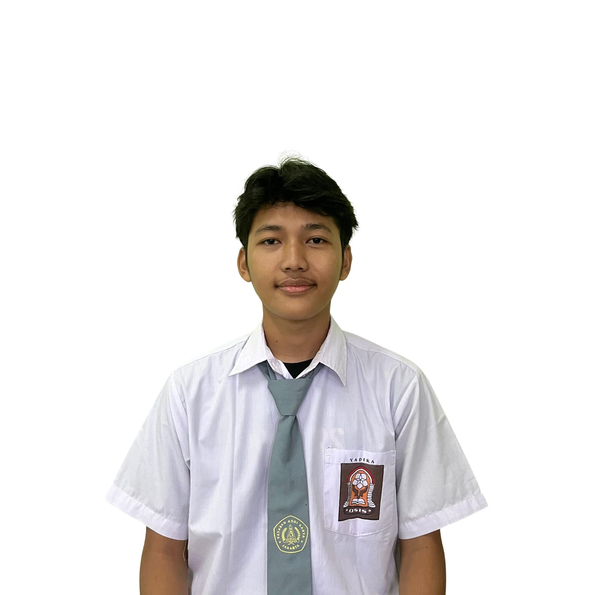

Proaktif, detail-oriented, dengan keterampilan problem-solving, komunikasi, dan kerja sama tim yang unggul. Berpengalaman dalam pengelolaan dan pemeliharaan. Mampu beradaptasi dan belajar dengan cepat, siap berkontribusi efektif di lingkungan kerja yang dinamis. Antusias untuk mengembangkan diri dalam layanan dan operasional.
Softskill
Pelayanan Pelanggan
Kemampuan Beradaptasi
Kerja Sama Tim yang Baik
Komunikasi Efektif
Problem Solving
Ketelitian dan Perhatian terhadap Detail
Manajemen Waktu
Inisiatif
Hardskill
Pengoperasian Komputer Dasar
Pengelolaan Inventaris
Dasar-dasar Troubleshooting